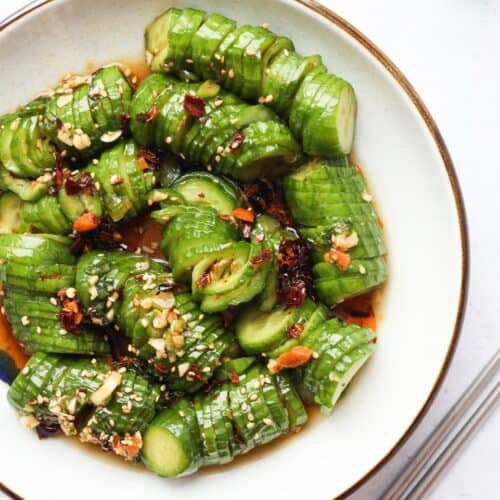

A crispy, refreshing and spicy cucumber salad.
Ingredients
6 mini cucumbers
2 tsp salt
1 tbsp soy sauce
2 cloves garlic
1 tbsp rice vinegar
1 tbsp chili oil
1 tbsp white sugar
1 tsp sesame oil
1 tsp sesame seeds
2 tbsp green onion
Instructions
Wash cucumbers and cut off the ends.
Place one cucumber between two chopsticks that you dont mind nicking up (like takeout chopsticks). Make thin diagonal slices on the top. Then flip the cucumber over and do the same on the other side. Then cut cucumber into halves. Repeat for remaining cucumbers. Transfer to a large bowl. Alternatively, you can thily slice your cucumbers too
Sprinkle salt over cucumbers and gently massage into them. Let cucumbers soak in salt for 5 minutes (no more than 10 minutes or they will break down). Rinse with cold water at least 3-4 times to completely remove the salt. Strain and set aside.
Combine dressing ingredients in a separate bowl
Pour dressing over cucumbers and gently mix. Enjoy!